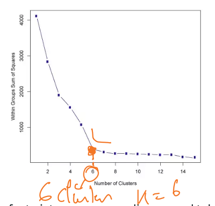

K-means clustering
Wat is het ?
K-means clustering is een zeer populaire clustering techniek door zijn eenvoud.
(K = aantal clusters) (zowel op veel/weinig data en veel/weinig features)
Hoe weet je dat punten bij elkaar horen ? Hoe bepaal je dat die gelijkenis hebben ?
Gelijkenis uitdrukken via een afstandsfunctie:
- Hoe dicht liggen trainingsamples qua afstand van elkaar in de feature space?
- Veel gebruikte afstandsmaat is de Euclidische afstand

Hoe ga je te werk voor punten van de clusters te bepalen ?
Je kan het aantal clusters bijv op voorhand vastleggen
initialiseer (al dan niet willekeurig) 4 centroïden (centrum van cluster)
iteratief proces :
- voor elk datapunt welk centroide ligt het dichtst bij : wijs datapunt toe aan centroide
- verplaats centroïde naar het gemiddelde van de datapunten toegewezen aan cluster van de centroïde
- terug naar eerste stap tenzij centroïde niet meer van plaats verandert

Eigenschappen van K-means clustering
- Eenvoudig en resultaten gemakkelijk interpreteerbaar.
- K-means vindt niet altijd het globale optimum (= beste oplossing).
- Uiteindelijke resultaat hangt af van initialisatie van de centroïden.
- Probeer verschillende intialisaties.
- Initaliseer eerste centroïdeop een willekeurig datapunt. Leg de tweede centroïde op een het datapunt dat zover mogelijk van het eerste is verwijderd, de derde centroïde zo ver mogelijke van de twee eerste, enzoverder
- Zeer gevoelig aan uitschieters.
- Problemen bij clusters met hetzelfde gemiddelde of niet-sferisch clusters (Oplossing: kernel k-means of spectral clustering)

Hoe bepaal je hoeveel clusters je nodig hebt ?
Strategie om het aantal clusters te bepalen
- Visuele inspectie van de datapunten (indien mogelijk). (business case kan aantal clusters ook al bepalen door voorafgaande analyse)
- Silhouette clustering.
- Elbow method
Elbow method
Wordt gebruikt voor het vinden van het aantal clusters:
Bepaal voor een verschillend aantal clusters de ’sum of squared error (SSE)'. De SSE de som van de gekwadrateerde afstanden tussen elk datapunt in een cluster en de centroïde van die cluster. (SSE is voor alle clusters samen !)
$$SSE = \sum^K_{i=1}\sum_{x\epsilon c_i} dist(x, c_i)^2$$
Elbow method voor het vinden van het aantal clusters:

Aantal clusters K is daar waar de fout niet noemenswaardig meer zakt. In het voorbeeld hieronder: K=6 (knik in de curve). De ongelijkheid binnen de cluster neemt niet veel meer af (vanaf 6).